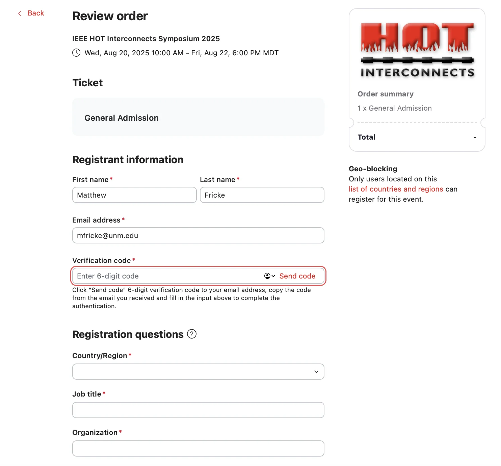
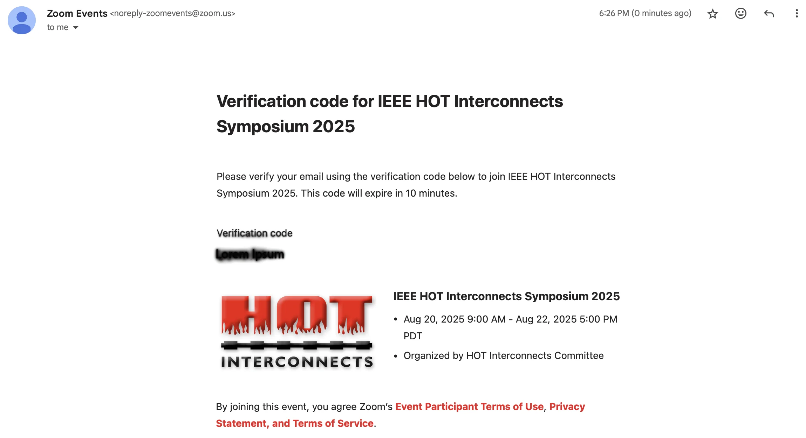
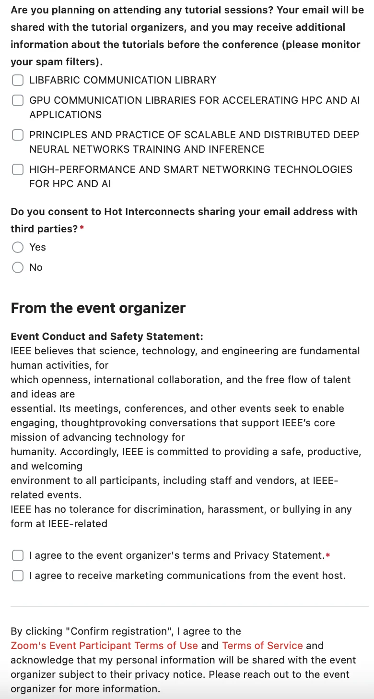
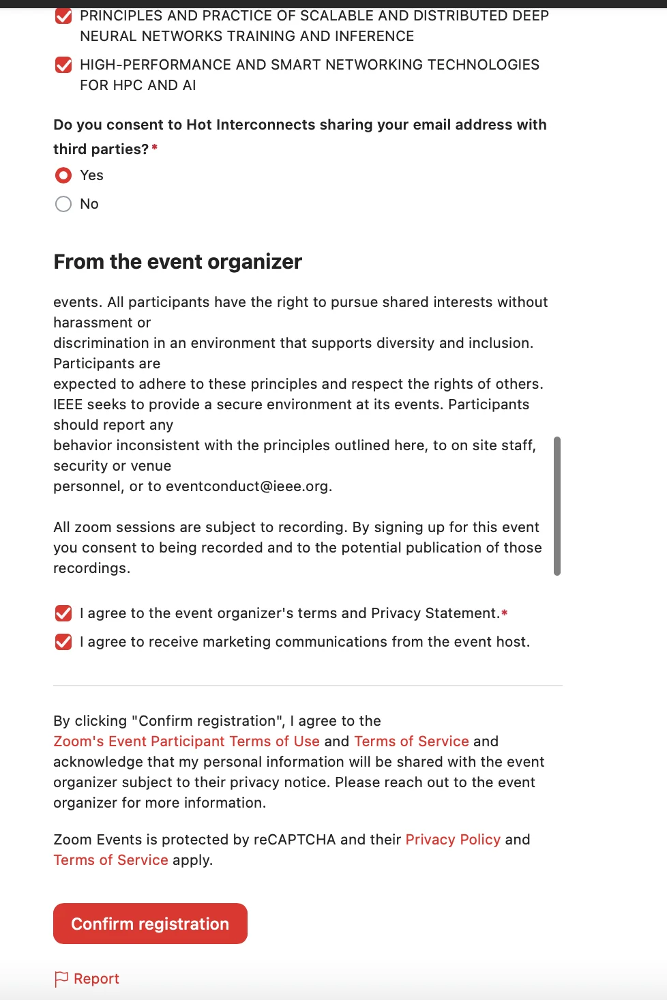
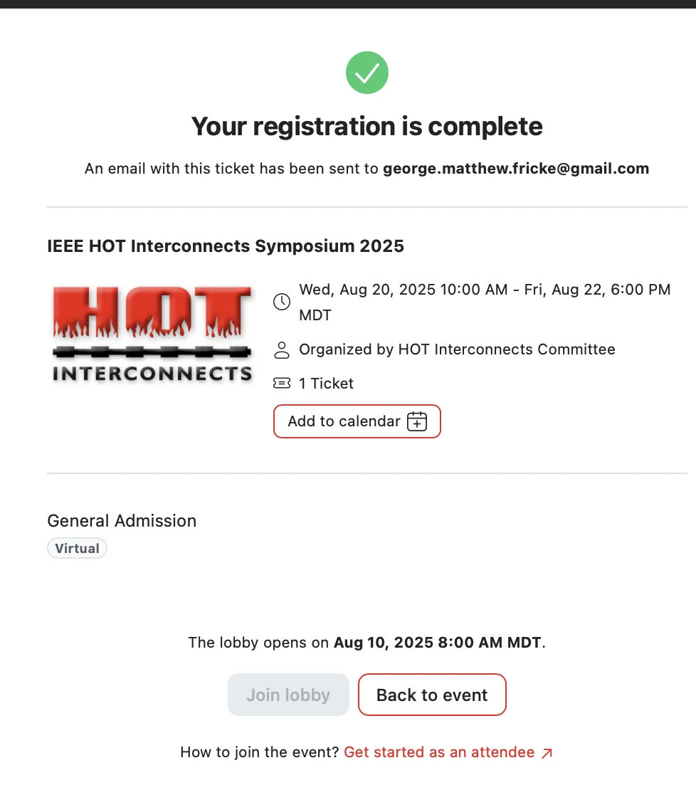
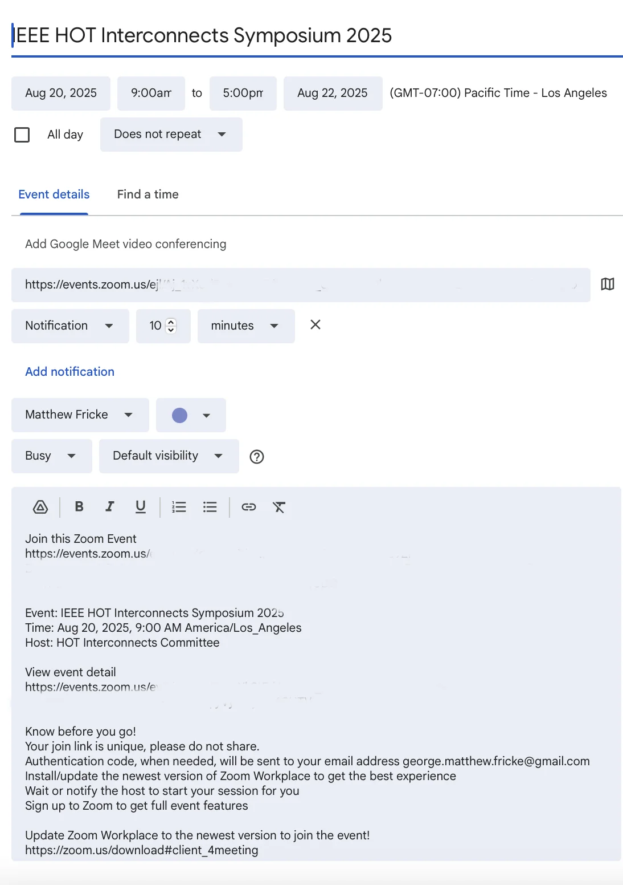
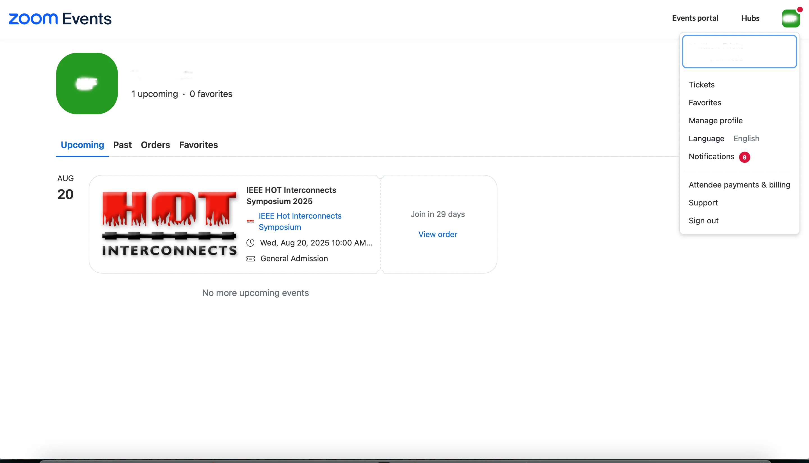
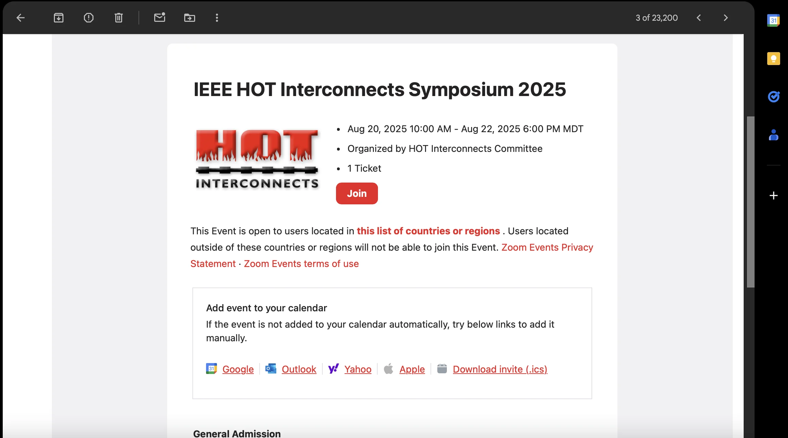
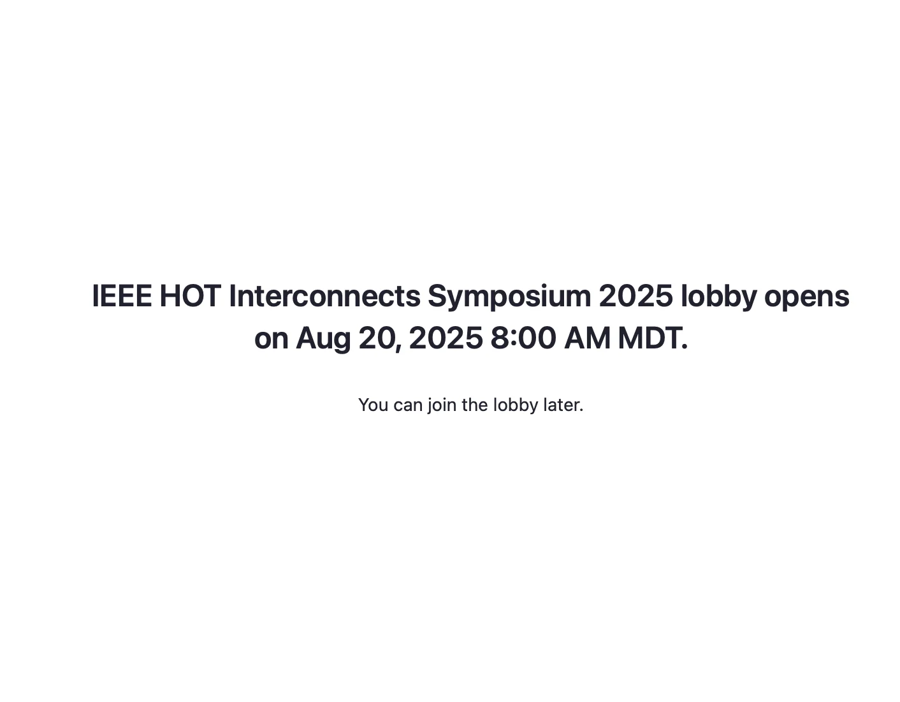
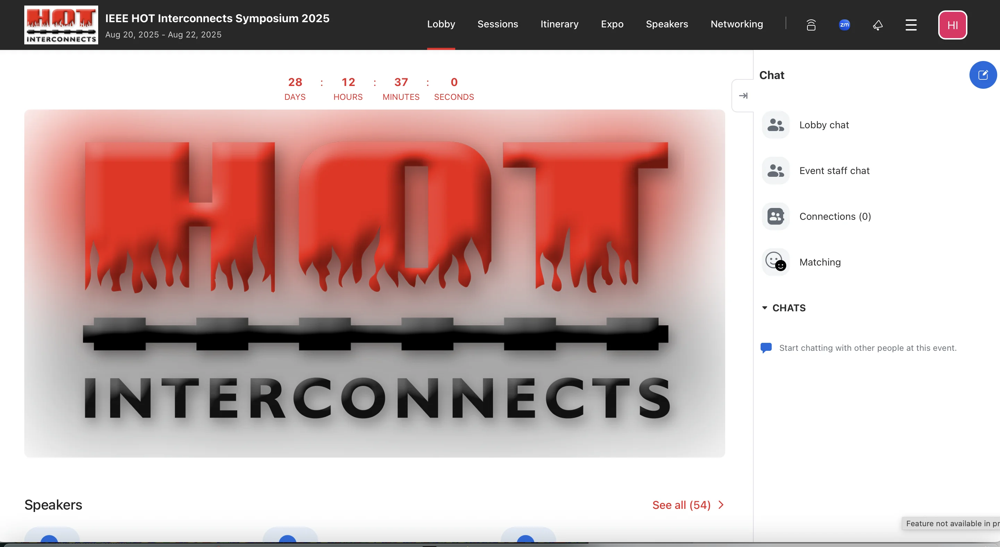

Registration/JOIN link: Register here on Zoom Events
|
|
NOTE: Q&A's are handled in Slack, the link is provided in the Zoom Lobby! |
This guide provides step-by-step instructions for registering and attending the IEEE HOT Interconnects Symposium 2025 via Zoom Events. The event uses the Zoom Events platform, which provides digital tickets tied to your email address. Follow the steps below to successfully register, join, and recover your ticket if needed.
To begin, visit the event registration page. You'll be prompted to enter your first and last name as well as your email address. Once filled in, click the Send code button. This triggers Zoom to send a verification code to the email address you provided, ensuring the address is valid and that you have access to it.
Open your inbox and find the email from Zoom Events. It will contain a 6-digit verification code. Copy this code and return to the registration form. Paste or type the code into the appropriate field to verify your identity and continue the registration process.
After verifying your email, the form will expand to include optional selections for tutorial sessions. If you wish to participate in any of these sessions, simply check the corresponding boxes. Your selections may help the organisers tailor communication or plan capacity.
Before completing your registration, you must acknowledge and accept the terms and conditions presented. These include Zoom’s event policies and the event organiser’s code of conduct. Tick the required boxes to proceed.
After completing the registration, you will be shown a confirmation screen. This screen includes the event details and a button allowing you to add the event to your calendar. At this point, a confirmation email has also been sent to you containing your ticket and join information.
Your calendar item will include a direct link to the Zoom Event. This personalised join link will redirect you to the lobby or session once the event begins. Please do not share this link, as it is tied to your ticket and Zoom account.
If you registed using your Zoom account you can find your ticket under the ticket menu item.
Additionally, you’ll receive a confirmation email with the subject line "Order confirmation for IEEE HOT Interconnects Symposium 2025". Within that email is a red Join button you can use to access the event. You can also use the included options to add the event to various calendar platforms.
If you attempt to join before the event is open, you may see a message indicating when the lobby becomes available. This message confirms your registration and lets you know when you'll be able to access event features.
Once the lobby opens, you’ll be able to see the full event interface. This includes tabs for Sessions, Speakers, Networking, and more. From here, you can browse content, chat with other attendees, and join scheduled presentations.
